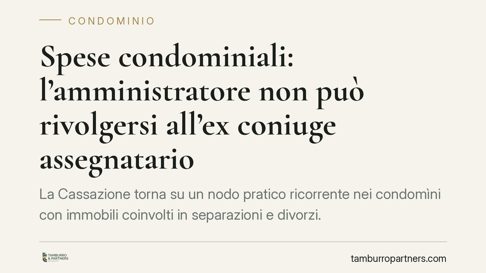

Spese condominiali: l'amministratore non può rivolgersi all'ex coniuge assegnatario
La Cassazione torna su un nodo pratico ricorrente nei condomìni con immobili coinvolti in separazioni e divorzi. L'amministratore può pretendere le spese condominiali solo dal proprietario dell'unità, non dall'ex coniuge che vi abita in forza di un provvedimento di assegnazione della casa familiare. Una distinzione che incide su solleciti, decreti ingiuntivi e gestione delle morosità.

Il caso
Nelle separazioni e nei divorzi è frequente che il giudice assegni la casa familiare a uno dei coniugi, di norma quello con cui restano a vivere i figli. L'immobile, però, resta di proprietà di chi ne è titolare: l'assegnazione attribuisce un diritto di godere dell'abitazione, non la proprietà.
Da qui il problema operativo affrontato dalla Cassazione: quando maturano spese condominiali non pagate, l'amministratore può rivolgersi all'occupante (l'ex coniuge assegnatario) oppure deve agire solo contro il proprietario? La Suprema Corte ha confermato che il debitore delle spese resta il proprietario, anche se non abita più nell'appartamento.
Inquadramento normativo
Il riferimento è l'art. 1123 del Codice civile, che stabilisce come le spese per la conservazione e il godimento delle parti comuni siano sostenute dai condòmini in proporzione al valore della rispettiva proprietà. La norma àncora l'obbligo di contribuzione alla titolarità del diritto reale sull'unità immobiliare, non al mero utilizzo materiale dei locali.
L'assegnazione della casa familiare, prevista in sede di separazione e divorzio, ha natura diversa: tutela l'interesse della prole a conservare l'ambiente domestico. Si tratta di un diritto personale di godimento, opponibile a terzi nei limiti di legge, ma che non trasforma l'assegnatario in condòmino. Di conseguenza, l'ex coniuge che occupa l'immobile non assume la qualità di soggetto obbligato verso il condominio.
La Cassazione, nella decisione richiamata, ribadisce questo principio: la legittimazione passiva rispetto al credito condominiale spetta al proprietario, unico titolare del rapporto di partecipazione al condominio.
Implicazioni pratiche
Per l'amministratore, la conseguenza è netta. I solleciti, le diffide e gli eventuali decreti ingiuntivi vanno indirizzati al proprietario dell'unità immobiliare, identificato sulla base dei registri e delle visure, non all'occupante di fatto. Agire contro l'ex coniuge assegnatario espone al rischio di un'azione inefficace e di una condanna alle spese di lite.
Per il proprietario che non vive più nell'immobile, il messaggio è altrettanto chiaro: resta debitore delle spese condominiali, comprese quelle ordinarie, anche se non gode materialmente del bene. Eventuali accordi con l'ex coniuge per il riparto interno dei costi hanno valore solo tra le parti e non sono opponibili al condominio.
Per l'ex coniuge assegnatario, l'occupazione dell'abitazione non genera un obbligo diretto verso il condominio. Ciò non esclude che, sul piano dei rapporti familiari, il provvedimento di separazione o divorzio o un accordo specifico possano addossargli alcune voci di spesa, ma la pretesa del condominio resta rivolta al titolare del diritto reale.
Attenzione a una possibile fonte di equivoci: il regolamento condominiale o le delibere assembleari non possono spostare l'obbligo di pagamento su un soggetto privo della qualità di condòmino. La ripartizione interna alla famiglia segue regole proprie e non vincola l'ente di gestione.
Cosa fare in concreto
- Verificate la titolarità prima di agire: l'amministratore controlli visure e registri per individuare il proprietario effettivo dell'unità in morosità.
- Indirizzate solleciti e ingiunzioni al proprietario, anche quando l'immobile risulta abitato dall'ex coniuge assegnatario.
- Non recepite nel bilancio condominiale accordi di riparto stipulati in sede di separazione: restano efficaci solo tra i coniugi.
- Proprietari non residenti: monitorate la regolarità dei pagamenti e formalizzate per iscritto qualsiasi intesa con l'ex coniuge sul rimborso delle spese.
- In caso di contestazione, consigliamo di valutare con un legale la corretta legittimazione passiva prima di avviare il recupero, per evitare azioni nei confronti del soggetto sbagliato.
La pronuncia non introduce un principio nuovo, ma consolida un orientamento utile a prevenire contenziosi inutili. La regola di fondo resta lineare: paga chi è proprietario, non chi abita.
Disclaimer
Contributo informativo a cura di Tamburro & Partners - Avv. Giuseppe Tamburro. Non costituisce parere legale.
Ogni condominio ha una storia a sé.
Se gestisci un'amministrazione e vuoi un confronto su una specifica questione condominiale, scrivi allo studio. Ti rispondiamo entro un giorno lavorativo.